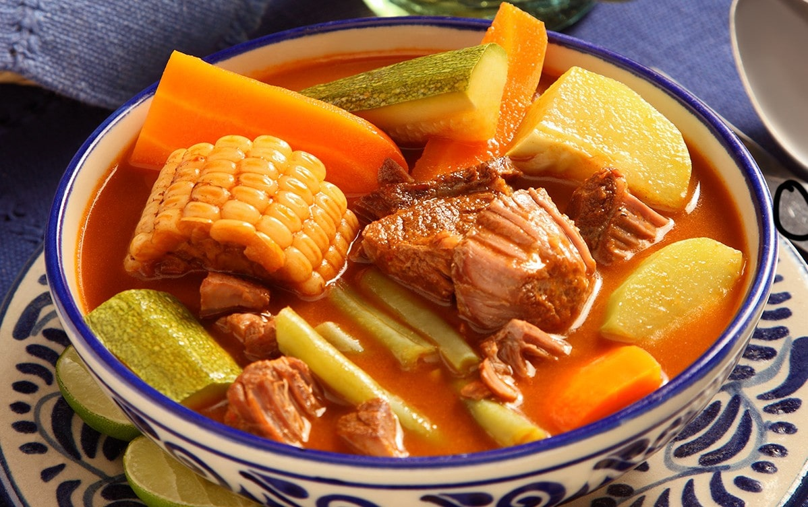

Este Mole de olla no puede faltar en tu recetario.

Aprende a hacer la receta de la abuela de manera fácil, rápida y sobre todo, deliciosa.
---INGREDIENTES(para 4 personas)---
1/2 kg Chambarete (en trozos)
1/2 kg Retazo de res (en trozos)
2 Huesos de tuétano
1/2 Cebolla
1/2 cabeza de ajos
2 Elotes (cortados en cuartos)
2 xoconostles (sin piel y sin semillas y cortados en sextos)
1 Chayote (pelado y en cubos medianos)
200 gr Elotes (en tercios)
1 Papa grande (en cubos medianos)
1 Calabaza grande (en medias lunas)
2 zanhorias (en medias lunas)
Para la salsa:
1/4 Cebolla
2 dientes Ajos
2 Chiles ancho (desvenados y sin semillas)
1 Chile pasilla (desvenados y sin semillas)
2 Chiles guajillo (desvenados y sin semillas)
3 jitomates (en mitades)
3 cucharadas Aceite
2 ramas Epazote
Para los chochoyotes:
200 gr Masa de maíz
1 cucharadita Aceite
1 cucharada Epazote (finamente picado)
Sal al gusto
---PROCEDIMIENTO---
Coloca la carne, la cebolla y cubre con agua.
Añade sal y cocina por 30 minutos en una olla de presión a partir de que suelte vapor.
Retira la cebolla y los ajos.
Añade los elotes y el xoconostle.
Cocina por 20 minutos.
Para la salsa:
Calienta aceite en una cacerola y acitrona la cebolla y el ajo.
Añade los chiles y cocina sin dejar de mover hasta que se doren.
Agrega el jitomate y cocina por 10 minutos.
Vierte un poco de agua y sal.
Tapa y cocina por 10 minutos, deja enfriar.
Licúa y cuela.
Sofríe en una cacerola y reserva.
Para los chochoyotes:
Mexcla la masa de maíz con el aceite, epazote y sal.
Mezcla y forma bolitas de 2 centímetros.
Haz un hueco con la yema de tu dedo, como si fuera una cazuelita.
Reserva y vierte la salsa al caldo y mezcla.
Agrega las ramas de epazote y sazona de nuevo.
Añade los chayotes y las papas.
Cocina por 8 minutos.
Agrega los ejotes y zanahorias.
Tapa y cocina por 10 minutos más.
Agrega los chochoyotes y cocina por 10 minutos o hasta que todo esté cocido.